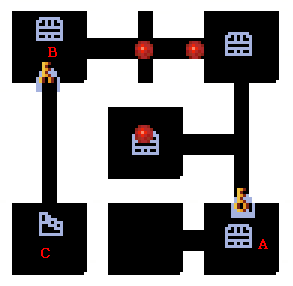
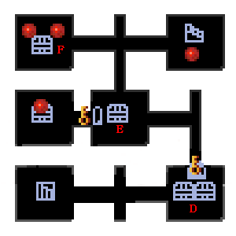
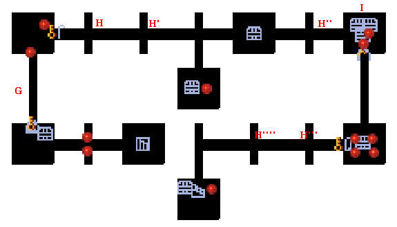

|  | |
| A | 部屋Aにある宝箱を開くと敵が現れます。 また、同時に上へ続く扉も開きます。 |
| B | 部屋Bにある扉を開閉するたびに敵が現れます。 何度かそれを行うと、下へ続く扉が開きます。 |
| C | 部屋Cに入ると突然敵が現れるので注意してください。 |
|  | |
| D | 部屋Dにある宝箱を開くと、その都度敵が現れます。 |
| E | 部屋Eにある宝箱を開閉すると、そのたびに敵が現れます。 何度かそれを行うと、左へ続く扉が開きます。 |
| F | 部屋Fには大砲が設置されています。 宝箱を開く前に爆弾を使った方が無難でしょう。 |
|  | |
| G | G地点に移動すると、突然敵に囲まれます。 注意してください。 |
| H | H～H''''地点は近寄ると敵が現れます。 狭いので注意してください。 |
| I | I地点では宝箱の開閉により下へ続く扉が開きます。 開 閉 閉 の形にしてください。 |